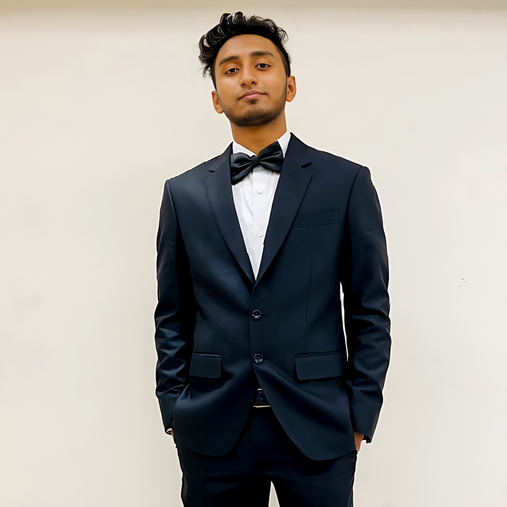
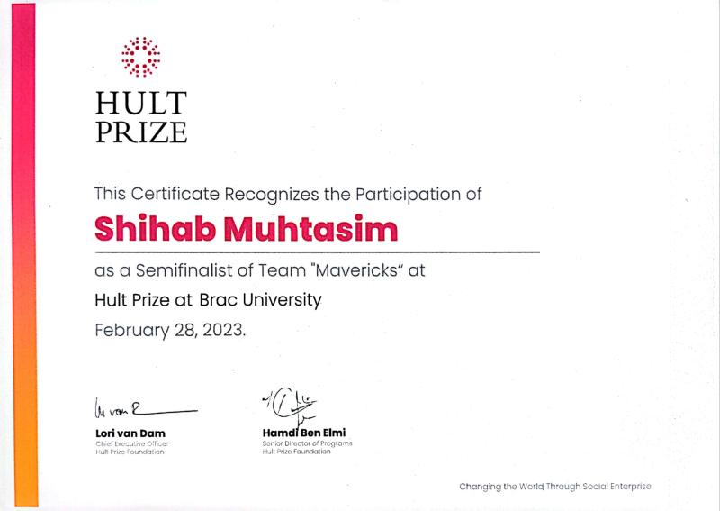
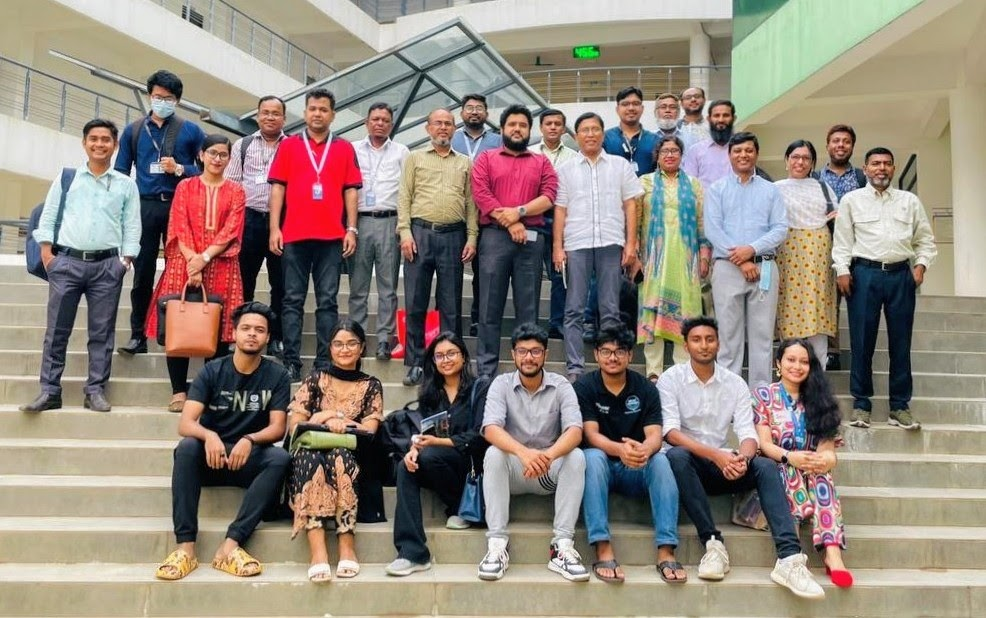
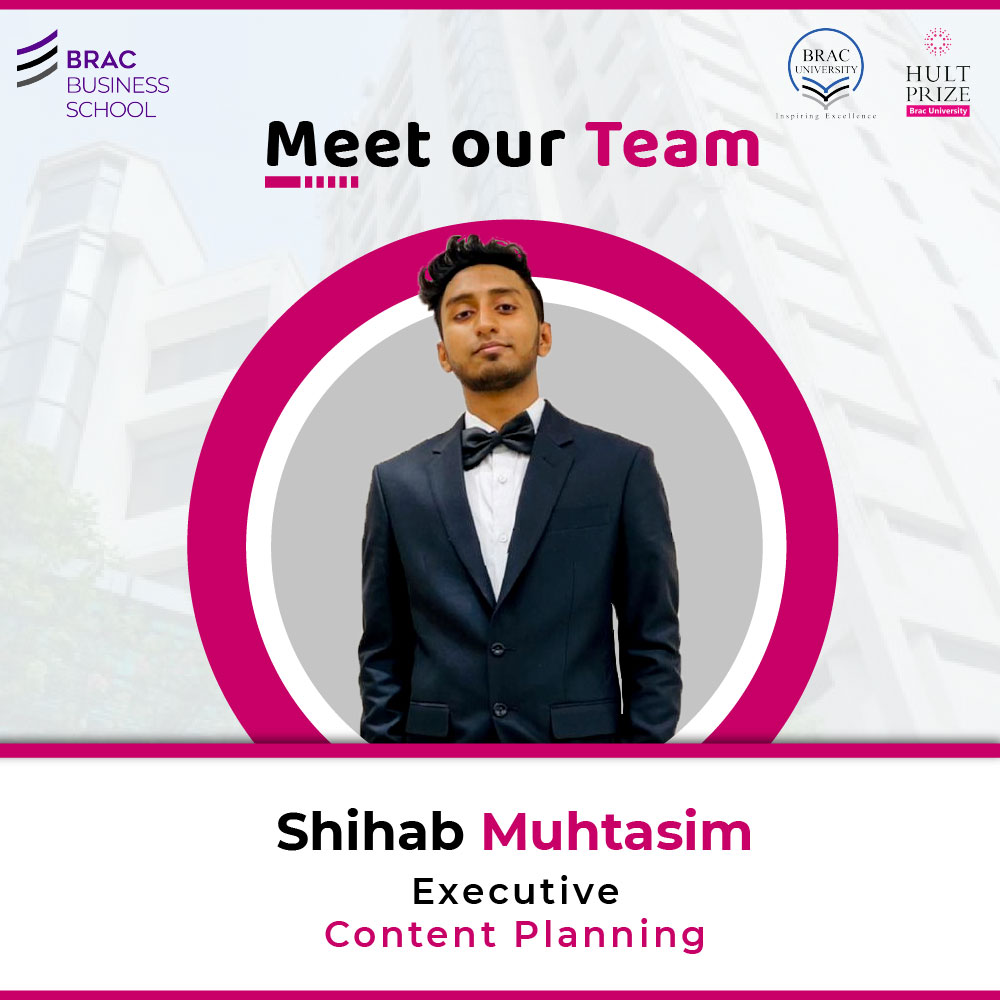

Dynamic Problem Solver

I am an aspiring Computer Science and Engineering student with a passion for problem-solving and a drive to continuously learn and grow. Currently, I am a final year student maintaining a CGPA of 4.00. I thrive in challenging environments and have a natural leadership ability. My experience includes being an executive and semi-finalist at Hult Prize, and I have consistently been on the Dean & VC's list for seven semesters at BRAC University.
Current Education
-
 Bachelor's in Computer Science and Engineering (CSE) at BRAC University
Bachelor's in Computer Science and Engineering (CSE) at BRAC University
Achievements
- Dean's and VC's list for Seven Semesters, BRAC University
- Received 100% Merit Scholarship Based on Academic Results
- Completed undergrads in 3.4 years instead of 4
- Maintained a 100% attendance rate
- Led my team to Semi-finals of Hult Prize 22-23, BRAC University
- Won RS-59 Cup Runners up 2022, BRAC University

Technical Skills
- Programming Languages: Python, PHP, R, Assembly, C, Verilog
- Web Development: HTML, CSS, JavaScript, Laravel (PHP framework), MySQL, SQL, React front-end
- Data Analysis and Visualization: Pandas, Matplotlib, NumPy, scikit-learn, Networkx, Huggingface
- Version Control: Git, GitHub, GitLab
- Software Development: OpenGL,Object-Oriented Programming, Tkinter, Latex (documentation)
- Technical Tools: Anaconda, Proteus, LT Spice, MS Word, PowerPoint, Excel, Adobe Lightroom, Quartus, DHCL
- Music and Media: FL Studio, Wondershare Filmora, Adobe Premiere Pro
Work Experience
BRAC University - Student Tutor (2023-Present): My responsibilities include providing Lab duty each week helping students to complete tasks, checking assignments of data structures, providing consultation of 60 hours a month and doing certain tasks instructed by course faculty such as taking lab finals, vivas etc
Institute of Young Talents (IYT)- Head of Web Development (2023-Present): My responsibilities include overseeing the web development team at IYT, focusing on guiding and contributing tosignificant website projects. My efforts align with IYT's mission to document and transform hidden talents intoimpactful content for the benefit of a wider audience.
Project ORKO, BRAC University - Committee Member & Tutor (2022): Selected as one of seven individuals from 1000 students to participate in the pilot program at BRAC University's Project ORKO. Involved in designing, developing, and contributing to training modules for the program.


Hult Prize (2022-23), BRAC University - Executive of Content Planning: Produced the official theme song for Hult Prize, featured at official events. Managed audio content for Hult's marketing initiatives, overseeing mixing and mastering. Actively participated in the competition, advancing to the semi-finals.

Education History
- GPA: 5.00, Security Printing Corporation High School, SSC (O level equivalent) | Science | 2018
- GPA: 5.00, Dhaka City College, HSC (A-level equivalent) | Science | 2020